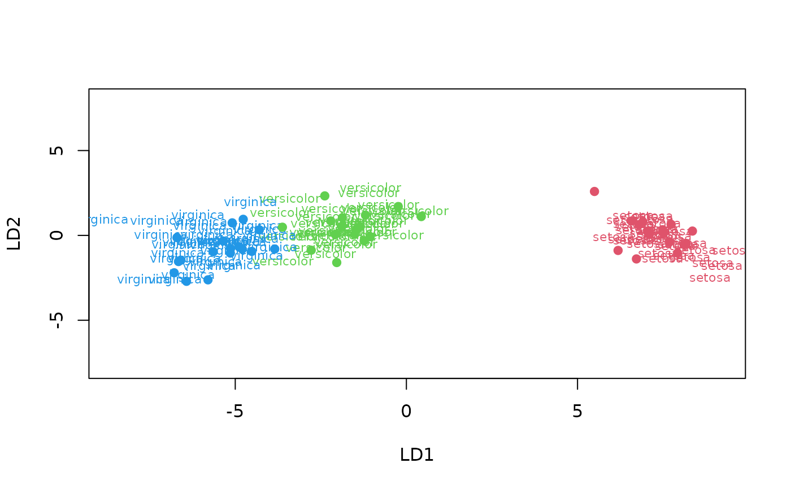

Unified (formula-based) interface version of the linear discriminant
analysis algorithm provided by MASS::lda().
Usage
mlLda(train, ...)
ml_lda(train, ...)
# S3 method for formula
mlLda(formula, data, ..., subset, na.action)
# S3 method for default
mlLda(train, response, ...)
# S3 method for mlLda
predict(
object,
newdata,
type = c("class", "membership", "both", "projection"),
prior = object$prior,
dimension = NULL,
method = c("plug-in", "predictive", "debiased", "cv"),
...
)Arguments
- train
a matrix or data frame with predictors.
- ...
further arguments passed to
MASS::lda()or itspredict()method (see the corresponding help page).- formula
a formula with left term being the factor variable to predict and the right term with the list of independent, predictive variables, separated with a plus sign. If the data frame provided contains only the dependent and independent variables, one can use the
class ~ .short version (that one is strongly encouraged). Variables with minus sign are eliminated. Calculations on variables are possible according to usual formula convention (possibly protected by usingI()).- data
a data.frame to use as a training set.
- subset
index vector with the cases to define the training set in use (this argument must be named, if provided).
- na.action
function to specify the action to be taken if
NAs are found. Forml_lda()na.failis used by default. The calculation is stopped if there is anyNAin the data. Another option isna.omit, where cases with missing values on any required variable are dropped (this argument must be named, if provided). For thepredict()method, the default, and most suitable option, isna.exclude. In that case, rows withNAs innewdata=are excluded from prediction, but reinjected in the final results so that the number of items is still the same (and in the same order asnewdata=).- response
a vector of factor for the classification.
- object
an mlLda object
- newdata
a new dataset with same conformation as the training set (same variables, except may by the class for classification or dependent variable for regression). Usually a test set, or a new dataset to be predicted.
- type
the type of prediction to return.
"class"by default, the predicted classes. Other options are"membership"the membership (a number between 0 and 1) to the different classes, or"both"to return classes and memberships. Thetype = "projection"returns a projection of the individuals in the plane represented by thedimension=discriminant components.- prior
the prior probabilities of class membership. By default, the prior are obtained from the object and, if they where not changed, correspond to the proportions observed in the training set.
- dimension
the number of the predictive space to use. If
NULL(the default) a reasonable value is used. If this is less than min(p, ng-1), only the firstdimensiondiscriminant components are used (except formethod = "predictive"), and only those dimensions are returned in x.- method
"plug-in","predictive","debiased", or"cv"."plug-in"(default) the usual unbiased parameter estimates are used. With"predictive", the parameters are integrated out using a vague prior. With"debiased", an unbiased estimator of the log posterior probabilities is used. With"cv", cross-validation is used instead. If you specifymethod = "cv"thencvpredict()is used and you cannot providenewdata=in that case.
Value
ml_lda()/mlLda() creates an mlLda, mlearning object
containing the classifier and a lot of additional metadata used by the
functions and methods you can apply to it like predict() or
cvpredict(). In case you want to program new functions or extract
specific components, inspect the "unclassed" object using unclass().
See also
mlearning(), cvpredict(), confusion(), also MASS::lda() that
actually does the classification.
Examples
# Prepare data: split into training set (2/3) and test set (1/3)
data("iris", package = "datasets")
train <- c(1:34, 51:83, 101:133)
iris_train <- iris[train, ]
iris_test <- iris[-train, ]
# One case with missing data in train set, and another case in test set
iris_train[1, 1] <- NA
iris_test[25, 2] <- NA
iris_lda <- ml_lda(data = iris_train, Species ~ .)
iris_lda
#> A mlearning object of class mlLda (linear discriminant analysis):
#> Call: mlLda.formula(formula = Species ~ ., data = iris_train)
#> Trained using 99 out of 100 cases:
#> setosa versicolor virginica
#> 33 33 33
summary(iris_lda)
#> A mlearning object of class mlLda (linear discriminant analysis):
#> Initial call: mlLda.formula(formula = Species ~ ., data = iris_train)
#> Call:
#> lda(sapply(train, as.numeric), grouping = response, .args. = ..1)
#>
#> Prior probabilities of groups:
#> setosa versicolor virginica
#> 0.3333333 0.3333333 0.3333333
#>
#> Group means:
#> Sepal.Length Sepal.Width Petal.Length Petal.Width
#> setosa 5.048485 3.478788 1.478788 0.2454545
#> versicolor 6.027273 2.763636 4.284848 1.3303030
#> virginica 6.642424 2.951515 5.642424 2.0090909
#>
#> Coefficients of linear discriminants:
#> LD1 LD2
#> Sepal.Length 0.731861 0.9595049
#> Sepal.Width 1.522827 -2.8735104
#> Petal.Length -1.992262 -0.1425383
#> Petal.Width -3.021434 -1.5467486
#>
#> Proportion of trace:
#> LD1 LD2
#> 0.9916 0.0084
plot(iris_lda, col = as.numeric(response(iris_lda)) + 1)
# Prediction using a test set
predict(iris_lda, newdata = iris_test) # class (default type)
#> [1] setosa setosa setosa setosa setosa setosa
#> [7] setosa setosa setosa setosa setosa setosa
#> [13] setosa setosa setosa setosa virginica versicolor
#> [19] versicolor versicolor versicolor versicolor versicolor versicolor
#> [25] <NA> versicolor versicolor versicolor versicolor versicolor
#> [31] versicolor versicolor versicolor versicolor virginica virginica
#> [37] virginica virginica virginica virginica virginica virginica
#> [43] virginica virginica virginica virginica virginica virginica
#> [49] virginica virginica
#> Levels: setosa versicolor virginica
predict(iris_lda, type = "membership") # posterior probability
#> setosa versicolor virginica
#> [1,] 1.000000e+00 9.524232e-17 5.937500e-36
#> [2,] 1.000000e+00 1.758123e-18 6.393714e-38
#> [3,] 1.000000e+00 6.513799e-16 2.394500e-34
#> [4,] 1.000000e+00 2.346163e-21 1.932405e-41
#> [5,] 1.000000e+00 7.169015e-20 9.796544e-39
#> [6,] 1.000000e+00 9.874841e-18 2.894202e-36
#> [7,] 1.000000e+00 4.123017e-19 1.318116e-38
#> [8,] 1.000000e+00 9.594213e-15 6.039947e-33
#> [9,] 1.000000e+00 7.873691e-18 2.097109e-37
#> [10,] 1.000000e+00 2.609732e-22 7.255914e-43
#> [11,] 1.000000e+00 8.320901e-18 1.364519e-36
#> [12,] 1.000000e+00 1.211508e-17 2.805560e-37
#> [13,] 1.000000e+00 9.536296e-19 1.465443e-38
#> [14,] 1.000000e+00 6.860245e-28 1.426815e-50
#> [15,] 1.000000e+00 7.475537e-26 1.520329e-46
#> [16,] 1.000000e+00 4.785676e-23 2.483069e-43
#> [17,] 1.000000e+00 9.802813e-20 2.845112e-39
#> [18,] 1.000000e+00 4.605666e-21 5.968926e-41
#> [19,] 1.000000e+00 4.062215e-21 1.190882e-40
#> [20,] 1.000000e+00 1.516425e-18 4.852725e-38
#> [21,] 1.000000e+00 3.056987e-19 4.751958e-38
#> [22,] 1.000000e+00 1.648141e-23 2.642554e-44
#> [23,] 1.000000e+00 1.336747e-13 1.268148e-30
#> [24,] 1.000000e+00 2.003584e-15 3.819817e-33
#> [25,] 1.000000e+00 2.046680e-15 4.351542e-34
#> [26,] 1.000000e+00 5.142538e-16 6.111497e-34
#> [27,] 1.000000e+00 2.391388e-20 2.579476e-40
#> [28,] 1.000000e+00 2.042960e-20 1.273291e-40
#> [29,] 1.000000e+00 4.233371e-16 1.789849e-34
#> [30,] 1.000000e+00 1.249215e-15 4.594423e-34
#> [31,] 1.000000e+00 7.854999e-18 8.037421e-37
#> [32,] 1.000000e+00 7.493326e-26 3.966815e-47
#> [33,] 1.000000e+00 5.492045e-27 1.165689e-48
#> [34,] 6.728356e-18 9.999301e-01 6.988092e-05
#> [35,] 5.384547e-19 9.993600e-01 6.399678e-04
#> [36,] 1.279003e-21 9.971466e-01 2.853444e-03
#> [37,] 1.491199e-21 9.997082e-01 2.917717e-04
#> [38,] 1.949409e-22 9.971777e-01 2.822274e-03
#> [39,] 2.197454e-21 9.980027e-01 1.997293e-03
#> [40,] 2.857474e-21 9.849268e-01 1.507319e-02
#> [41,] 2.377941e-13 9.999999e-01 1.271743e-07
#> [42,] 3.751481e-19 9.999124e-01 8.756011e-05
#> [43,] 8.944958e-20 9.993947e-01 6.053269e-04
#> [44,] 1.386835e-17 9.999987e-01 1.273302e-06
#> [45,] 2.421474e-19 9.992724e-01 7.275660e-04
#> [46,] 1.510041e-17 9.999993e-01 7.449744e-07
#> [47,] 2.233292e-22 9.938387e-01 6.161252e-03
#> [48,] 9.070886e-14 9.999985e-01 1.464089e-06
#> [49,] 5.217489e-17 9.999732e-01 2.680851e-05
#> [50,] 1.674158e-22 9.719677e-01 2.803234e-02
#> [51,] 3.173058e-15 9.999990e-01 9.944224e-07
#> [52,] 9.041922e-27 9.790373e-01 2.096266e-02
#> [53,] 9.465411e-17 9.999970e-01 3.045202e-06
#> [54,] 8.632202e-27 2.075616e-01 7.924384e-01
#> [55,] 2.159399e-16 9.999935e-01 6.542439e-06
#> [56,] 1.428380e-27 8.568276e-01 1.431724e-01
#> [57,] 8.472457e-21 9.995057e-01 4.942844e-04
#> [58,] 2.784802e-17 9.999829e-01 1.705453e-05
#> [59,] 5.450336e-18 9.999472e-01 5.280245e-05
#> [60,] 4.174183e-22 9.989487e-01 1.051274e-03
#> [61,] 4.534883e-26 7.602933e-01 2.397067e-01
#> [62,] 3.385492e-22 9.926904e-01 7.309575e-03
#> [63,] 1.921877e-11 1.000000e+00 1.449145e-08
#> [64,] 6.151650e-17 9.999974e-01 2.647688e-06
#> [65,] 5.418928e-15 9.999997e-01 2.885234e-07
#> [66,] 6.125645e-16 9.999968e-01 3.179623e-06
#> [67,] 3.260056e-50 5.375879e-09 1.000000e+00
#> [68,] 1.534619e-36 9.609211e-04 9.990391e-01
#> [69,] 4.298766e-41 3.843125e-05 9.999616e-01
#> [70,] 1.120396e-36 8.624695e-04 9.991375e-01
#> [71,] 2.665504e-44 1.851447e-06 9.999981e-01
#> [72,] 5.691479e-47 9.683420e-07 9.999990e-01
#> [73,] 1.005543e-31 3.051764e-02 9.694824e-01
#> [74,] 2.170455e-40 1.677627e-04 9.998322e-01
#> [75,] 1.299923e-40 2.936646e-04 9.997063e-01
#> [76,] 6.144375e-45 2.105094e-07 9.999998e-01
#> [77,] 4.613890e-31 1.568862e-02 9.843114e-01
#> [78,] 3.058067e-36 2.171019e-03 9.978290e-01
#> [79,] 8.517422e-38 2.969936e-04 9.997030e-01
#> [80,] 2.876903e-39 2.085888e-04 9.997914e-01
#> [81,] 1.721481e-44 1.154274e-06 9.999988e-01
#> [82,] 4.614421e-39 3.104958e-05 9.999690e-01
#> [83,] 8.029333e-34 5.762455e-03 9.942375e-01
#> [84,] 1.047025e-42 1.368459e-06 9.999986e-01
#> [85,] 7.150283e-57 2.601747e-09 1.000000e+00
#> [86,] 7.847879e-32 2.568989e-01 7.431011e-01
#> [87,] 1.710232e-41 9.095346e-06 9.999909e-01
#> [88,] 5.034775e-36 7.039438e-04 9.992961e-01
#> [89,] 1.297055e-47 1.520685e-06 9.999985e-01
#> [90,] 2.216946e-30 1.336448e-01 8.663552e-01
#> [91,] 5.328521e-38 8.627299e-05 9.999137e-01
#> [92,] 7.527919e-35 2.899037e-03 9.971010e-01
#> [93,] 7.099373e-29 2.331240e-01 7.668760e-01
#> [94,] 1.017544e-28 1.325438e-01 8.674562e-01
#> [95,] 2.315077e-42 1.492841e-05 9.999851e-01
#> [96,] 8.918840e-31 1.250327e-01 8.749673e-01
#> [97,] 2.927915e-40 2.443079e-04 9.997557e-01
#> [98,] 7.078517e-35 5.907724e-04 9.994092e-01
#> [99,] 4.036304e-44 3.685307e-06 9.999963e-01
predict(iris_lda, type = "both") # both class and membership in a list
#> $class
#> [1] setosa setosa setosa setosa setosa setosa
#> [7] setosa setosa setosa setosa setosa setosa
#> [13] setosa setosa setosa setosa setosa setosa
#> [19] setosa setosa setosa setosa setosa setosa
#> [25] setosa setosa setosa setosa setosa setosa
#> [31] setosa setosa setosa versicolor versicolor versicolor
#> [37] versicolor versicolor versicolor versicolor versicolor versicolor
#> [43] versicolor versicolor versicolor versicolor versicolor versicolor
#> [49] versicolor versicolor versicolor versicolor versicolor virginica
#> [55] versicolor versicolor versicolor versicolor versicolor versicolor
#> [61] versicolor versicolor versicolor versicolor versicolor versicolor
#> [67] virginica virginica virginica virginica virginica virginica
#> [73] virginica virginica virginica virginica virginica virginica
#> [79] virginica virginica virginica virginica virginica virginica
#> [85] virginica virginica virginica virginica virginica virginica
#> [91] virginica virginica virginica virginica virginica virginica
#> [97] virginica virginica virginica
#> Levels: setosa versicolor virginica
#>
#> $membership
#> setosa versicolor virginica
#> [1,] 1.000000e+00 9.524232e-17 5.937500e-36
#> [2,] 1.000000e+00 1.758123e-18 6.393714e-38
#> [3,] 1.000000e+00 6.513799e-16 2.394500e-34
#> [4,] 1.000000e+00 2.346163e-21 1.932405e-41
#> [5,] 1.000000e+00 7.169015e-20 9.796544e-39
#> [6,] 1.000000e+00 9.874841e-18 2.894202e-36
#> [7,] 1.000000e+00 4.123017e-19 1.318116e-38
#> [8,] 1.000000e+00 9.594213e-15 6.039947e-33
#> [9,] 1.000000e+00 7.873691e-18 2.097109e-37
#> [10,] 1.000000e+00 2.609732e-22 7.255914e-43
#> [11,] 1.000000e+00 8.320901e-18 1.364519e-36
#> [12,] 1.000000e+00 1.211508e-17 2.805560e-37
#> [13,] 1.000000e+00 9.536296e-19 1.465443e-38
#> [14,] 1.000000e+00 6.860245e-28 1.426815e-50
#> [15,] 1.000000e+00 7.475537e-26 1.520329e-46
#> [16,] 1.000000e+00 4.785676e-23 2.483069e-43
#> [17,] 1.000000e+00 9.802813e-20 2.845112e-39
#> [18,] 1.000000e+00 4.605666e-21 5.968926e-41
#> [19,] 1.000000e+00 4.062215e-21 1.190882e-40
#> [20,] 1.000000e+00 1.516425e-18 4.852725e-38
#> [21,] 1.000000e+00 3.056987e-19 4.751958e-38
#> [22,] 1.000000e+00 1.648141e-23 2.642554e-44
#> [23,] 1.000000e+00 1.336747e-13 1.268148e-30
#> [24,] 1.000000e+00 2.003584e-15 3.819817e-33
#> [25,] 1.000000e+00 2.046680e-15 4.351542e-34
#> [26,] 1.000000e+00 5.142538e-16 6.111497e-34
#> [27,] 1.000000e+00 2.391388e-20 2.579476e-40
#> [28,] 1.000000e+00 2.042960e-20 1.273291e-40
#> [29,] 1.000000e+00 4.233371e-16 1.789849e-34
#> [30,] 1.000000e+00 1.249215e-15 4.594423e-34
#> [31,] 1.000000e+00 7.854999e-18 8.037421e-37
#> [32,] 1.000000e+00 7.493326e-26 3.966815e-47
#> [33,] 1.000000e+00 5.492045e-27 1.165689e-48
#> [34,] 6.728356e-18 9.999301e-01 6.988092e-05
#> [35,] 5.384547e-19 9.993600e-01 6.399678e-04
#> [36,] 1.279003e-21 9.971466e-01 2.853444e-03
#> [37,] 1.491199e-21 9.997082e-01 2.917717e-04
#> [38,] 1.949409e-22 9.971777e-01 2.822274e-03
#> [39,] 2.197454e-21 9.980027e-01 1.997293e-03
#> [40,] 2.857474e-21 9.849268e-01 1.507319e-02
#> [41,] 2.377941e-13 9.999999e-01 1.271743e-07
#> [42,] 3.751481e-19 9.999124e-01 8.756011e-05
#> [43,] 8.944958e-20 9.993947e-01 6.053269e-04
#> [44,] 1.386835e-17 9.999987e-01 1.273302e-06
#> [45,] 2.421474e-19 9.992724e-01 7.275660e-04
#> [46,] 1.510041e-17 9.999993e-01 7.449744e-07
#> [47,] 2.233292e-22 9.938387e-01 6.161252e-03
#> [48,] 9.070886e-14 9.999985e-01 1.464089e-06
#> [49,] 5.217489e-17 9.999732e-01 2.680851e-05
#> [50,] 1.674158e-22 9.719677e-01 2.803234e-02
#> [51,] 3.173058e-15 9.999990e-01 9.944224e-07
#> [52,] 9.041922e-27 9.790373e-01 2.096266e-02
#> [53,] 9.465411e-17 9.999970e-01 3.045202e-06
#> [54,] 8.632202e-27 2.075616e-01 7.924384e-01
#> [55,] 2.159399e-16 9.999935e-01 6.542439e-06
#> [56,] 1.428380e-27 8.568276e-01 1.431724e-01
#> [57,] 8.472457e-21 9.995057e-01 4.942844e-04
#> [58,] 2.784802e-17 9.999829e-01 1.705453e-05
#> [59,] 5.450336e-18 9.999472e-01 5.280245e-05
#> [60,] 4.174183e-22 9.989487e-01 1.051274e-03
#> [61,] 4.534883e-26 7.602933e-01 2.397067e-01
#> [62,] 3.385492e-22 9.926904e-01 7.309575e-03
#> [63,] 1.921877e-11 1.000000e+00 1.449145e-08
#> [64,] 6.151650e-17 9.999974e-01 2.647688e-06
#> [65,] 5.418928e-15 9.999997e-01 2.885234e-07
#> [66,] 6.125645e-16 9.999968e-01 3.179623e-06
#> [67,] 3.260056e-50 5.375879e-09 1.000000e+00
#> [68,] 1.534619e-36 9.609211e-04 9.990391e-01
#> [69,] 4.298766e-41 3.843125e-05 9.999616e-01
#> [70,] 1.120396e-36 8.624695e-04 9.991375e-01
#> [71,] 2.665504e-44 1.851447e-06 9.999981e-01
#> [72,] 5.691479e-47 9.683420e-07 9.999990e-01
#> [73,] 1.005543e-31 3.051764e-02 9.694824e-01
#> [74,] 2.170455e-40 1.677627e-04 9.998322e-01
#> [75,] 1.299923e-40 2.936646e-04 9.997063e-01
#> [76,] 6.144375e-45 2.105094e-07 9.999998e-01
#> [77,] 4.613890e-31 1.568862e-02 9.843114e-01
#> [78,] 3.058067e-36 2.171019e-03 9.978290e-01
#> [79,] 8.517422e-38 2.969936e-04 9.997030e-01
#> [80,] 2.876903e-39 2.085888e-04 9.997914e-01
#> [81,] 1.721481e-44 1.154274e-06 9.999988e-01
#> [82,] 4.614421e-39 3.104958e-05 9.999690e-01
#> [83,] 8.029333e-34 5.762455e-03 9.942375e-01
#> [84,] 1.047025e-42 1.368459e-06 9.999986e-01
#> [85,] 7.150283e-57 2.601747e-09 1.000000e+00
#> [86,] 7.847879e-32 2.568989e-01 7.431011e-01
#> [87,] 1.710232e-41 9.095346e-06 9.999909e-01
#> [88,] 5.034775e-36 7.039438e-04 9.992961e-01
#> [89,] 1.297055e-47 1.520685e-06 9.999985e-01
#> [90,] 2.216946e-30 1.336448e-01 8.663552e-01
#> [91,] 5.328521e-38 8.627299e-05 9.999137e-01
#> [92,] 7.527919e-35 2.899037e-03 9.971010e-01
#> [93,] 7.099373e-29 2.331240e-01 7.668760e-01
#> [94,] 1.017544e-28 1.325438e-01 8.674562e-01
#> [95,] 2.315077e-42 1.492841e-05 9.999851e-01
#> [96,] 8.918840e-31 1.250327e-01 8.749673e-01
#> [97,] 2.927915e-40 2.443079e-04 9.997557e-01
#> [98,] 7.078517e-35 5.907724e-04 9.994092e-01
#> [99,] 4.036304e-44 3.685307e-06 9.999963e-01
#>
# Type projection
predict(iris_lda, type = "projection") # Projection on the LD axes
#> LD1 LD2
#> [1,] 6.9568849 1.101758773
#> [2,] 7.3143043 0.349409550
#> [3,] 6.6903832 0.512302451
#> [4,] 7.9437673 -0.526396971
#> [5,] 7.4913946 -1.356759342
#> [6,] 7.0443141 -0.490171701
#> [7,] 7.4399757 0.034051280
#> [8,] 6.4386717 0.909357381
#> [9,] 7.2120848 0.954828771
#> [10,] 8.1895682 -0.444199891
#> [11,] 7.0943773 -0.172103518
#> [12,] 7.1858422 1.160483149
#> [13,] 7.4175902 0.723492195
#> [14,] 9.5368393 -0.879689584
#> [15,] 8.8708188 -2.477155425
#> [16,] 8.2882993 -1.299744040
#> [17,] 7.5625273 -0.297770308
#> [18,] 7.8608135 -0.626881984
#> [19,] 7.8201493 -1.174077249
#> [20,] 7.3342677 0.389345573
#> [21,] 7.3657232 -1.041401073
#> [22,] 8.4479276 -0.853183613
#> [23,] 6.0559967 -0.075179432
#> [24,] 6.4966988 -0.214864995
#> [25,] 6.6316187 1.169201608
#> [26,] 6.6364628 -0.289552269
#> [27,] 7.7386306 -0.061398786
#> [28,] 7.7855741 0.240206078
#> [29,] 6.7166258 0.306648073
#> [30,] 6.6375292 0.689949598
#> [31,] 7.1284334 0.108503501
#> [32,] 8.9544702 -1.630830155
#> [33,] 9.2233941 -1.770750771
#> [34,] -1.4018257 0.215542317
#> [35,] -1.7446333 -0.486327810
#> [36,] -2.3278902 0.223760356
#> [37,] -2.1734350 1.616896012
#> [38,] -2.4798042 0.744773004
#> [39,] -2.2617801 0.300772664
#> [40,] -2.3661324 -1.052811848
#> [41,] -0.1592556 1.317643422
#> [42,] -1.6500487 0.862722175
#> [43,] -1.8867796 0.039219364
#> [44,] -1.0936527 2.534490411
#> [45,] -1.8174507 -0.348616687
#> [46,] -1.0533572 2.848024067
#> [47,] -2.5173487 0.214041057
#> [48,] -0.3896479 0.045755570
#> [49,] -1.1759882 0.257803374
#> [50,] -2.6346875 -0.679229623
#> [51,] -0.6375420 1.205114077
#> [52,] -3.4138326 2.195281602
#> [53,] -0.9921706 1.461747971
#> [54,] -3.6146724 -1.472866304
#> [55,] -0.9729048 0.755843737
#> [56,] -3.6807031 1.372163670
#> [57,] -2.0653447 0.810741819
#> [58,] -1.1987424 0.713582680
#> [59,] -1.4014570 0.449203926
#> [60,] -2.3565549 1.158791673
#> [61,] -3.4300580 -0.004393127
#> [62,] -2.4942258 -0.008076640
#> [63,] 0.3323463 1.482037583
#> [64,] -1.0184132 1.667402349
#> [65,] -0.5170437 1.836331036
#> [66,] -0.8433763 0.924272004
#> [67,] -7.6753629 -2.630185338
#> [68,] -5.3490939 -0.329497936
#> [69,] -6.1389227 -0.367575061
#> [70,] -5.3725855 -0.341041849
#> [71,] -6.6809564 -1.083699014
#> [72,] -7.1675754 0.012400591
#> [73,] -4.5126905 -0.223477557
#> [74,] -6.0353078 0.518686233
#> [75,] -6.0874244 1.163656598
#> [76,] -6.7590661 -2.642937904
#> [77,] -4.3775210 -1.249274587
#> [78,] -5.3084297 0.217697329
#> [79,] -5.5615762 -0.598411216
#> [80,] -5.8297626 0.008832618
#> [81,] -6.7075280 -1.390223284
#> [82,] -5.7555896 -1.837757310
#> [83,] -4.8747045 -0.422238089
#> [84,] -6.3774971 -2.359385918
#> [85,] -8.9054854 0.905644030
#> [86,] -4.5563357 1.932111501
#> [87,] -6.1865638 -1.415020182
#> [88,] -5.2468744 -0.934917158
#> [89,] -7.2960376 0.823474190
#> [90,] -4.2825677 0.333437008
#> [91,] -5.5763665 -1.584922469
#> [92,] -5.0539672 -0.396555891
#> [93,] -4.0042449 -0.035610691
#> [94,] -3.9720918 -0.720517080
#> [95,] -6.3581122 -0.421764910
#> [96,] -4.3557936 0.516003560
#> [97,] -6.0180954 0.775820547
#> [98,] -5.0291597 -1.815373745
#> [99,] -6.6602556 -0.576439772
# Add test set items to the previous plot
points(predict(iris_lda, newdata = iris_test, type = "projection"),
col = as.numeric(predict(iris_lda, newdata = iris_test)) + 1, pch = 19)

# predict() and confusion() should be used on a separate test set
# for unbiased estimation (or using cross-validation, bootstrap, ...)
# Wrong, cf. biased estimation (so-called, self-consistency)
confusion(iris_lda)
#> 99 items classified with 98 true positives (error rate = 1%)
#> Predicted
#> Actual 01 02 03 (sum) (FNR%)
#> 01 setosa 33 0 0 33 0
#> 02 versicolor 0 32 1 33 3
#> 03 virginica 0 0 33 33 0
#> (sum) 33 32 34 99 1
# Estimation using a separate test set
confusion(predict(iris_lda, newdata = iris_test), iris_test$Species)
#> 50 items classified with 47 true positives (error rate = 6%)
#> Predicted
#> Actual 01 02 03 04 (sum) (FNR%)
#> 01 setosa 16 0 0 0 16 0
#> 02 NA 0 0 0 0 0
#> 03 versicolor 0 1 15 1 17 12
#> 04 virginica 0 0 1 16 17 6
#> (sum) 16 1 16 17 50 6
# Another dataset (binary predictor... not optimal for lda, just for test)
data("HouseVotes84", package = "mlbench")
house_lda <- ml_lda(data = HouseVotes84, na.action = na.omit, Class ~ .)
#> Warning: force conversion from factor to numeric; may be not optimal or suitable
summary(house_lda)
#> A mlearning object of class mlLda (linear discriminant analysis):
#> Initial call: mlLda.formula(formula = Class ~ ., data = HouseVotes84, na.action = na.omit)
#> Call:
#> lda(sapply(train, as.numeric), grouping = response, .args. = ..1)
#>
#> Prior probabilities of groups:
#> democrat republican
#> 0.5344828 0.4655172
#>
#> Group means:
#> V1 V2 V3 V4 V5 V6 V7
#> democrat 1.588710 1.451613 1.854839 1.048387 1.201613 1.443548 1.766129
#> republican 1.212963 1.472222 1.157407 1.990741 1.953704 1.870370 1.268519
#> V8 V9 V10 V11 V12 V13 V14
#> democrat 1.830645 1.790323 1.532258 1.508065 1.129032 1.290323 1.346774
#> republican 1.148148 1.138889 1.574074 1.157407 1.851852 1.842593 1.981481
#> V15 V16
#> democrat 1.596774 1.943548
#> republican 1.111111 1.666667
#>
#> Coefficients of linear discriminants:
#> LD1
#> V1 0.05874608
#> V2 -0.13982178
#> V3 -0.78702772
#> V4 5.64762176
#> V5 0.12150873
#> V6 -0.08307307
#> V7 0.24825927
#> V8 -0.06528145
#> V9 -0.21114235
#> V10 0.25213648
#> V11 -0.70823602
#> V12 0.02863686
#> V13 0.23819274
#> V14 -0.07092076
#> V15 0.18474183
#> V16 0.37102658
confusion(house_lda) # Self-consistency (biased metrics)
#> 232 items classified with 225 true positives (error rate = 3%)
#> Predicted
#> Actual 01 02 (sum) (FNR%)
#> 01 democrat 118 6 124 5
#> 02 republican 1 107 108 1
#> (sum) 119 113 232 3
print(confusion(house_lda), error.col = FALSE) # Without error column
#> 232 items classified with 225 true positives (error rate = 3%)
#> Predicted
#> Actual 01 02 (sum)
#> 01 democrat 118 6 124
#> 02 republican 1 107 108
#> (sum) 119 113 232
# More complex formulas
# Exclude one or more variables
iris_lda2 <- ml_lda(data = iris, Species ~ . - Sepal.Width)
summary(iris_lda2)
#> A mlearning object of class mlLda (linear discriminant analysis):
#> Initial call: mlLda.formula(formula = Species ~ . - Sepal.Width, data = iris)
#> Call:
#> lda(sapply(train, as.numeric), grouping = response, .args. = ..1)
#>
#> Prior probabilities of groups:
#> setosa versicolor virginica
#> 0.3333333 0.3333333 0.3333333
#>
#> Group means:
#> Sepal.Length Petal.Length Petal.Width
#> setosa 5.006 1.462 0.246
#> versicolor 5.936 4.260 1.326
#> virginica 6.588 5.552 2.026
#>
#> Coefficients of linear discriminants:
#> LD1 LD2
#> Sepal.Length -1.539022 1.591246
#> Petal.Length 2.719004 -2.619277
#> Petal.Width 2.035445 4.719647
#>
#> Proportion of trace:
#> LD1 LD2
#> 0.9936 0.0064
# With calculation
iris_lda3 <- ml_lda(data = iris, Species ~ log(Petal.Length) +
log(Petal.Width) + I(Petal.Length/Sepal.Length))
summary(iris_lda3)
#> A mlearning object of class mlLda (linear discriminant analysis):
#> Initial call: mlLda.formula(formula = Species ~ log(Petal.Length) + log(Petal.Width) + I(Petal.Length/Sepal.Length), data = iris)
#> Call:
#> lda(sapply(train, as.numeric), grouping = response, .args. = ..1)
#>
#> Prior probabilities of groups:
#> setosa versicolor virginica
#> 0.3333333 0.3333333 0.3333333
#>
#> Group means:
#> log(Petal.Length) log(Petal.Width) I(Petal.Length/Sepal.Length)
#> setosa 0.3727587 -1.4846488 0.2927557
#> versicolor 1.4429301 0.2709331 0.7177285
#> virginica 1.7094260 0.6967478 0.8437495
#>
#> Coefficients of linear discriminants:
#> LD1 LD2
#> log(Petal.Length) 3.487170 -8.4773418
#> log(Petal.Width) 1.213501 -0.8427381
#> I(Petal.Length/Sepal.Length) 12.699248 24.1497766
#>
#> Proportion of trace:
#> LD1 LD2
#> 0.9992 0.0008
# Factor levels with missing items are allowed
ir2 <- iris[-(51:100), ] # No Iris versicolor in the training set
iris_lda4 <- ml_lda(data = ir2, Species ~ .)
summary(iris_lda4) # missing class
#> A mlearning object of class mlLda (linear discriminant analysis):
#> Initial call: mlLda.formula(formula = Species ~ ., data = ir2)
#> Call:
#> lda(sapply(train, as.numeric), grouping = response, .args. = ..1)
#>
#> Prior probabilities of groups:
#> setosa virginica
#> 0.5 0.5
#>
#> Group means:
#> Sepal.Length Sepal.Width Petal.Length Petal.Width
#> setosa 5.006 3.428 1.462 0.246
#> virginica 6.588 2.974 5.552 2.026
#>
#> Coefficients of linear discriminants:
#> LD1
#> Sepal.Length -1.1338828
#> Sepal.Width -0.8603685
#> Petal.Length 2.6138926
#> Petal.Width 2.6310427
# Missing levels are reinjected in class or membership by predict()
predict(iris_lda4, type = "both")
#> $class
#> [1] setosa setosa setosa setosa setosa setosa setosa
#> [8] setosa setosa setosa setosa setosa setosa setosa
#> [15] setosa setosa setosa setosa setosa setosa setosa
#> [22] setosa setosa setosa setosa setosa setosa setosa
#> [29] setosa setosa setosa setosa setosa setosa setosa
#> [36] setosa setosa setosa setosa setosa setosa setosa
#> [43] setosa setosa setosa setosa setosa setosa setosa
#> [50] setosa virginica virginica virginica virginica virginica virginica
#> [57] virginica virginica virginica virginica virginica virginica virginica
#> [64] virginica virginica virginica virginica virginica virginica virginica
#> [71] virginica virginica virginica virginica virginica virginica virginica
#> [78] virginica virginica virginica virginica virginica virginica virginica
#> [85] virginica virginica virginica virginica virginica virginica virginica
#> [92] virginica virginica virginica virginica virginica virginica virginica
#> [99] virginica virginica
#> Levels: setosa versicolor virginica
#>
#> $membership
#> setosa versicolor virginica
#> [1,] 1.000000e+00 0 7.512831e-46
#> [2,] 1.000000e+00 0 7.276088e-42
#> [3,] 1.000000e+00 0 4.053527e-43
#> [4,] 1.000000e+00 0 9.767576e-39
#> [5,] 1.000000e+00 0 1.100925e-45
#> [6,] 1.000000e+00 0 4.725337e-42
#> [7,] 1.000000e+00 0 2.717145e-40
#> [8,] 1.000000e+00 0 4.696606e-43
#> [9,] 1.000000e+00 0 6.665430e-38
#> [10,] 1.000000e+00 0 2.135333e-42
#> [11,] 1.000000e+00 0 2.258299e-47
#> [12,] 1.000000e+00 0 4.302480e-40
#> [13,] 1.000000e+00 0 8.984619e-43
#> [14,] 1.000000e+00 0 4.320000e-44
#> [15,] 1.000000e+00 0 1.896091e-56
#> [16,] 1.000000e+00 0 6.736143e-50
#> [17,] 1.000000e+00 0 2.140622e-48
#> [18,] 1.000000e+00 0 2.966078e-44
#> [19,] 1.000000e+00 0 3.436672e-45
#> [20,] 1.000000e+00 0 3.105104e-44
#> [21,] 1.000000e+00 0 1.235400e-42
#> [22,] 1.000000e+00 0 4.078324e-42
#> [23,] 1.000000e+00 0 2.817007e-49
#> [24,] 1.000000e+00 0 2.930308e-35
#> [25,] 1.000000e+00 0 2.463987e-35
#> [26,] 1.000000e+00 0 2.217500e-39
#> [27,] 1.000000e+00 0 2.821729e-38
#> [28,] 1.000000e+00 0 5.940132e-45
#> [29,] 1.000000e+00 0 5.126836e-46
#> [30,] 1.000000e+00 0 2.321415e-38
#> [31,] 1.000000e+00 0 1.584158e-38
#> [32,] 1.000000e+00 0 1.296042e-42
#> [33,] 1.000000e+00 0 1.109833e-49
#> [34,] 1.000000e+00 0 2.949136e-52
#> [35,] 1.000000e+00 0 8.430330e-41
#> [36,] 1.000000e+00 0 9.076484e-47
#> [37,] 1.000000e+00 0 3.450702e-50
#> [38,] 1.000000e+00 0 1.359439e-46
#> [39,] 1.000000e+00 0 5.197906e-40
#> [40,] 1.000000e+00 0 9.633928e-44
#> [41,] 1.000000e+00 0 3.751372e-45
#> [42,] 1.000000e+00 0 1.898509e-35
#> [43,] 1.000000e+00 0 4.696510e-41
#> [44,] 1.000000e+00 0 1.322046e-35
#> [45,] 1.000000e+00 0 2.706126e-36
#> [46,] 1.000000e+00 0 1.400418e-39
#> [47,] 1.000000e+00 0 3.031589e-44
#> [48,] 1.000000e+00 0 7.617054e-41
#> [49,] 1.000000e+00 0 1.100936e-46
#> [50,] 1.000000e+00 0 4.053568e-44
#> [51,] 4.617725e-58 0 1.000000e+00
#> [52,] 8.798280e-41 0 1.000000e+00
#> [53,] 3.746998e-46 0 1.000000e+00
#> [54,] 1.244135e-42 0 1.000000e+00
#> [55,] 2.725168e-50 0 1.000000e+00
#> [56,] 8.161589e-54 0 1.000000e+00
#> [57,] 2.612854e-35 0 1.000000e+00
#> [58,] 7.462125e-47 0 1.000000e+00
#> [59,] 3.861338e-45 0 1.000000e+00
#> [60,] 6.860587e-52 0 1.000000e+00
#> [61,] 5.943151e-35 0 1.000000e+00
#> [62,] 7.949426e-40 0 1.000000e+00
#> [63,] 7.138946e-42 0 1.000000e+00
#> [64,] 1.592055e-42 0 1.000000e+00
#> [65,] 3.051613e-48 0 1.000000e+00
#> [66,] 1.333376e-43 0 1.000000e+00
#> [67,] 3.791655e-39 0 1.000000e+00
#> [68,] 3.922977e-52 0 1.000000e+00
#> [69,] 3.638913e-63 0 1.000000e+00
#> [70,] 4.805245e-34 0 1.000000e+00
#> [71,] 1.663273e-46 0 1.000000e+00
#> [72,] 4.634792e-40 0 1.000000e+00
#> [73,] 3.682206e-54 0 1.000000e+00
#> [74,] 1.421107e-32 0 1.000000e+00
#> [75,] 3.628997e-44 0 1.000000e+00
#> [76,] 3.227610e-41 0 1.000000e+00
#> [77,] 3.738057e-31 0 1.000000e+00
#> [78,] 2.201634e-32 0 1.000000e+00
#> [79,] 2.962680e-47 0 1.000000e+00
#> [80,] 6.753553e-36 0 1.000000e+00
#> [81,] 4.115135e-45 0 1.000000e+00
#> [82,] 8.322520e-43 0 1.000000e+00
#> [83,] 7.504224e-49 0 1.000000e+00
#> [84,] 1.958141e-30 0 1.000000e+00
#> [85,] 3.454159e-39 0 1.000000e+00
#> [86,] 2.172019e-48 0 1.000000e+00
#> [87,] 1.338833e-49 0 1.000000e+00
#> [88,] 2.587466e-39 0 1.000000e+00
#> [89,] 1.740755e-31 0 1.000000e+00
#> [90,] 4.462874e-39 0 1.000000e+00
#> [91,] 2.053855e-48 0 1.000000e+00
#> [92,] 1.639745e-37 0 1.000000e+00
#> [93,] 8.798280e-41 0 1.000000e+00
#> [94,] 2.296341e-50 0 1.000000e+00
#> [95,] 1.493725e-50 0 1.000000e+00
#> [96,] 5.380405e-41 0 1.000000e+00
#> [97,] 8.437651e-37 0 1.000000e+00
#> [98,] 1.393126e-37 0 1.000000e+00
#> [99,] 1.610909e-45 0 1.000000e+00
#> [100,] 6.235010e-37 0 1.000000e+00
#>
# ... but, of course, the classifier is wrong for Iris versicolor
confusion(predict(iris_lda4, newdata = iris), iris$Species)
#> 150 items classified with 100 true positives (error rate = 33.3%)
#> Predicted
#> Actual 01 02 03 (sum) (FNR%)
#> 01 setosa 50 0 0 50 0
#> 02 versicolor 1 0 49 50 100
#> 03 virginica 0 0 50 50 0
#> (sum) 51 0 99 150 33
# Simpler interface, but more memory-effective
iris_lda5 <- ml_lda(train = iris[, -5], response = iris$Species)
summary(iris_lda5)
#> A mlearning object of class mlLda (linear discriminant analysis):
#> Initial call: mlLda.default(train = iris[, -5], response = iris$Species)
#> Call:
#> lda(sapply(train, as.numeric), grouping = response)
#>
#> Prior probabilities of groups:
#> setosa versicolor virginica
#> 0.3333333 0.3333333 0.3333333
#>
#> Group means:
#> Sepal.Length Sepal.Width Petal.Length Petal.Width
#> setosa 5.006 3.428 1.462 0.246
#> versicolor 5.936 2.770 4.260 1.326
#> virginica 6.588 2.974 5.552 2.026
#>
#> Coefficients of linear discriminants:
#> LD1 LD2
#> Sepal.Length 0.8293776 -0.02410215
#> Sepal.Width 1.5344731 -2.16452123
#> Petal.Length -2.2012117 0.93192121
#> Petal.Width -2.8104603 -2.83918785
#>
#> Proportion of trace:
#> LD1 LD2
#> 0.9912 0.0088